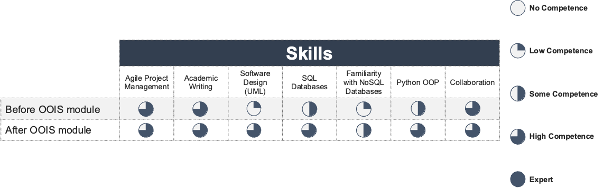

Reflections on OOP, the OOIS module, and own self-development

In these reflections, I provide a summary of my lessons learnt in Object-Oriented Programming (OOP) acquired throughout the Object-Oriented Information Systems (OOIS) module carried out at the University of Essex. Moreover, I will describe how I refined existing skills and strengths during this module and gained new abilities that can help me improve on my weaknesses and progress as a person and professional.
To structure my thoughts in a coherent and useful manner, I leveraged the nursing-like perspectives for aiding reflective writing (Mantzourani et al., 2019; Graham, 2022). This procedural choice is motivated by the absence of a unified structure to guide reflective writing in software development (Dybå et al., 2014; Baham & Hirschheim, 2022); in fact, it is worth noting that the Agile-based Scrum-related practice of carrying out a retrospective is mainly verbal (Napoleão et al., 2021).
First, the OOIS module is focused on providing the required theoretical background on the Unified Modelling Language (UML) (Chen et al., 2019) and OOP-related principles to respectively guide the practical object-oriented design and implementation of software-based systems to streamline business operations (Bräuer et al., 2018; Hasselbring, 2018). Throughout this module, I had the opportunity to appreciate the essential role that thorough design has to establish solid foundations of software-based applications by providing a visual canvas to capture and iteratively refine the key business and technical requirements. I also had the chance to ponder on information systems failures and strategies that could have prevented or, at least, mitigated them, as well as discuss alternatives to SQL/relational databases (DBs), including NoSQL databases and their advantages with unstructured data and Big Data-related applications (Raj & Deka, 2018; Chen et al., 2020). Via collaborative discussions on these two topics, I learnt from my interactions with my peers by incorporating their feedback to improve the clarity of the case studies presented.
In UML, I was able to refine my skills on creating entity relationships diagrams (ERDs), class diagrams, sequence diagrams, and learn the importance of generating activity diagrams. ERDs capture the key entities/tables in a database and their relationships (Kashmira & Sumathipala, 2018). Class diagrams consider the main classes and their relationships in the context of the application (Rosca & Domingues, 2021). This object-oriented design allows for a clear separation of concerns, reusability of the codes, and facilitates their maintainability and their testability (Bräuer et al., 2018).
Sequence diagrams enable to abstract from the technical details of ERD and class diagrams to capture the sequence of key steps from a user/operational perspective (Panigrahi et al., 2018). Activity diagrams allow to represent the decision-driven operations of users to aid via software (Kamonsantiroj et al., 2019).
In industry, there may not be always enough time to produce all these types of diagrams due to numerous deliverables to implement fast. Nevertheless, by developing clear and detailed UML diagrams during this module, I learnt that it is an upfront investment worth making to ensure a more reliable application. In fact, by thoroughly designing for extension (Bräuer et al., 2018), the details of key business rules can be more closely captured and updated more easily, in an agile manner.
OOP is of paramount importance in software development. In particular, revising the OOP-related principles of inheritance, polymorphism, and encapsulation via Python programming in the OOIS module enabled me to appreciate the importance of investing time upfront to implement a software abiding by such principles to improve codes’ reusability, maintainability and testability.
For instance, polymorphism enables to design functions that are generalisable and can ingest inputs of different types (e.g., ‘list’, ‘numpy.ndarray’, etc.), and still return the expected outcome (Åkerblom & Wrigstad, 2015). This OOP-related principle can be very useful in industry to develop generalised functions and enhance the reusability of the codes further. Moreover, it allows to overload operators and change their behaviour to suit tailored use cases. Instead, composition can enable a method in the parent class to be redefined and overridden in a child class (Lutz, 2014).
By leveraging the OOP-related principle named ‘inheritance’, attributes and methods of a parent class can be made available for reuse in child classes, also allowing child classes to extend the parent class’ functionalities by further attributes and methods (Orru et al., 2015). This principle is also very helpful in industry to minimise duplication of codes (Lutz, 2013) and separate the parent’s and classes’ concerns (Juhár & Vokorokos, 2015) further, making them easier to test and maintain.
Via the OOP-related principle ‘encapsulation’, using ‘private’ attributes and methods enables to mask certain details and make them accessible inside a class (Ciesla, 2021). Getters and setters could be used if such ‘private’ attributes had to be accessed outside the class and could be defined either via the ‘property’ decorator or via the ‘property’ function (Peng et al., 2021; Unpingco, 2021). Helper methods could be created for accessing ‘private’ methods outside that class (Cicolani, 2021).
Having experience in Java programming as well, I can appreciate the importance of the distinction between private and public attributes and methods, which is enforced more formally in Java (Böck, 2012), and how it can help decouple codes further and accelerate debugging too. If I were to change something in my programming style in Python, especially in industry, I would start by defining all attributes and methods as private, as when I code in Java programming, and then only making those that need to be public as such.
In a nutshell, leveraging object-oriented design and an OOP-driven approach can respectively ensure solid foundations and enhance the reusability, maintainability, and testability of software-based applications. Learning both these key topics throughout this module on OOIS has made me feel like I have the responsibility to articulate their value to the teams within which I work and will collaborate in industry and why such an upfront investment in time to leverage them appropriately is required to improve software quality and reusability, thus minimising bugs and technical debt, and ultimately improving customers’ and users’ satisfaction via the applications delivered. To quantify the overall improvement in competence in my skills brought by the OOIS module, please see my skills matrix in Fig. 1. below.
Figure 1. The overall increases in the competence of own skills further to taking the OOIS module.
References
Åkerblom, B., & Wrigstad, T. (2015) Measuring polymorphism in Python programs. In Proceedings of the 11th Symposium on Dynamic Languages: 114-128.
Baham, C., & Hirschheim, R. (2022) Issues, challenges, and a proposed theoretical core of agile software development research. Information Systems Journal 32(1): 103-129.
Böck, H. (2012). Java persistence API. In The Definitive Guide to NetBeans™ Platform 7: 315-320. Apress.
Bräuer, J., Plösch, R., Saft, M., & Körner, C. (2018). Measuring object-oriented design principles: The results of focus group-based research. Journal of Systems and Software 140: 74-90.
Chen, P. S., Chen, G. Y. H., Lien, S. F., & Huang, W. T. (2019). Using Scrum and unified modelling language to analyze and design an automatic course scheduling system. Journal of the Chinese Institute of Engineers 42(6): 534-543.
Chen, L., Zhang, N., Sun, H. M., Chang, C. C., Yu, S., & Choo, K. K. R. (2020) Secure search for encrypted personal health records from big data NoSQL databases in cloud. Computing 102(6): 1521-1545.
Cicolani, J. (2021) A Crash Course in Python. In Beginning Robotics with Raspberry Pi and Arduino: 39-93. Apress, Berkeley, CA.
Ciesla, R. (2021) Object-Oriented Programming (OOP). In Programming Basics: 43-62. Apress, Berkeley, CA.
Dybå, T., Maiden, N., & Glass, R. (2014) The reflective software engineer: reflective practice. IEEE Software, 31(4): 32-36.
Graham, M. M. (2022) Navigating Professional and Personal Knowing Through Reflective Storytelling Amidst Covid-19. Journal of Holistic Nursing 08980101211072289.
Hasselbring, W. (2018). Software architecture: Past, present, future. In The Essence of Software Engineering: 169-184. Springer, Cham.
Juhár, J., & Vokorokos, L. (2015) Separation of concerns and concern granularity in source code. In 2015 IEEE 13th International Scientific Conference on Informatics: 139-144. IEEE.
Kamonsantiroj, S., Pipanmaekaporn, L., & Lorpunmanee, S. (2019). A memorization approach for test case generation in concurrent UML activity diagram. In Proceedings of the 2019 2nd International Conference on Geoinformatics and Data Analysis: 20-25.
Kashmira, P. G. T. H., & Sumathipala, S. (2018). Generating entity relationship diagram from requirement specification based on NLP. In 2018 3rd International Conference on Information Technology Research (ICITR): 1-4. IEEE.
Lutz, M. (2013) Learning Python: Powerful object-oriented programming. O'Reilly Media, Inc..
Lutz, M. (2014). Python Pocket Reference: Python In Your Pocket. O'Reilly Media, Inc..
Mantzourani, E., Desselle, S., Le, J., Lonie, J. M., & Lucas, C. (2019) The role of reflective practice in healthcare professions: Next steps for pharmacy education and practice. Research in Social and Administrative Pharmacy 15(12): 1476-1479.
Napoleão, B. M., de Souza, É. F., Ruiz, G. A., Felizardo, K. R., Meinerz, G. V., & Vijaykumar, N. L. (2021) Synthesizing researches on Knowledge Management and Agile Software Development using the Meta-ethnography method. Journal of Systems and Software 178: 110973.
Orru, M., Tempero, E., Marchesi, M., & Tonelli, R. (2015) How do Python programs use inheritance? A replication study. In 2015 Asia-Pacific Software Engineering Conference (APSEC): 309-315. IEEE.
Panigrahi, S. S., Shaurya, S., Das, P., Swain, A. K., & Jena, A. K. (2018) Test scenarios generation using UML sequence diagram. In 2018 International Conference on Information Technology (ICIT): 50-56. IEEE.
Peng, Y., Zhang, Y., & Hu, M. (2021) An empirical study for common language features used in python projects. In 2021 IEEE International Conference on Software Analysis, Evolution and Reengineering (SANER): 24-35. IEEE.
Raj, P., & Deka, G. C. (2018) A Deep Dive into NoSQL Databases: The Use Cases and Applications. Academic Press.
Rosca, D., & Domingues, L. (2021) A systematic comparison of roundtrip software engineering approaches applied to UML class diagram. Procedia Computer Science 181: 861-868.
Unpingco, J. (2021). Object-Oriented Programming. In Python Programming for Data Analysis: 67-94. Springer, Cham.